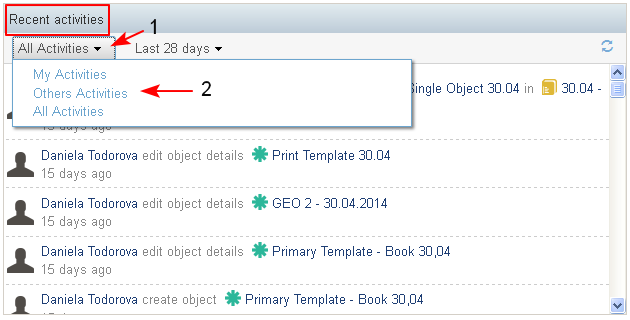

The Recent Activities dashlet is context dependent:
- On the Personal dashboard the dashlet displays all the activities performed on projects to which the user is a member - comments, adding new content, deleting content, etc.
- On the Project dashboard the dashlet displays all project activities like adding new content, editing or deleting existing content, commenting on a content, etc.
- On the Case dashboard the dashlet displays activities related only to a content associated with a case - uploading new documents, versions of document, comments, etc.
- On the dashlet the user could apply the combination of two filters to display the activities by ownership, type, and time period:
- The filter by ownership (1) includes (2):
- My activities - displays only the activities performed by the user
- Others activities - displays the others user's activities
- All activities - displays all activities - this filter is set by default
- (Not Ready) Activities on Favorites - will display all activities on users favorites objects
- The filter by ownership (1) includes (2):

- The filter by time period includes:
- Today - set by default, shows the activities in the current day
- Last 7 days - shows the activities in the last 7 days
- Last 14 days - shows the activities in the last 14 days
- Last 28 days - shows the activities in the last 28 days
- The filter by time period includes:

- For each activity in the dashlet the following information is displayed:
- ID, Title - of the objects, to which the action has been performed.
- User Name - the name of the user who performed the activitiy
- Action - the name of the action performed on the object
- Project ID - the ID of the project to which is associated the object
- Case ID - the ID of the case to which the object is associated (if there is a case)